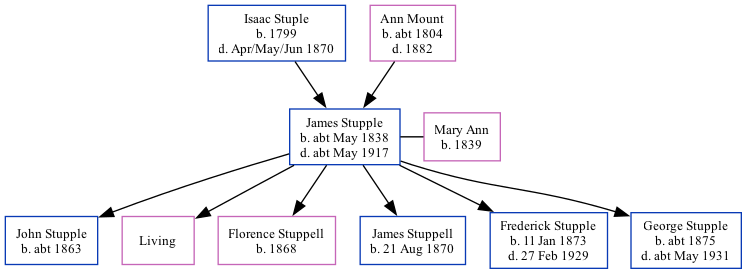

James Stupple cMay 1838 - c1917
[ Home ] | [ Calendar ] | [ Surnames Index ] | [ Family History ]A mariner and the child of Isaac Stuple and Ann Mount, James Stupple, the three times great-uncle of <a href="I1.html">Nigel Horne</a>, was born in Herne Bay, Kent, England <i>c.</i> May 1838<span class="citation">1,2,3,4</span>, was baptized in Herne, Kent, England on Sep 2, 1838 andhad 6 children with Mary Ann: <a href="I2000.html">John</a>, <a href="I1765.html">Ada E</a>, <a href="I1766.html">Florence Eliza</a>, <a href="I1484.html">James Henry</a>, <a href="I1767.html">Frederick</a> and <a href="I1482.html">George Edward</a>, along with 1 surviving child.</p><p>James spent all of his life in Kent, England. Throughout his life, he lived in several places around the county: in Herne in 1851<span class="citation">1</span>; at Queen Street in Herne Bay on Apr 2, 1871<span class="citation">6</span>; at 10 Victoria Terrace in Herne Bay on Apr 3, 1881<span class="citation">7</span> and on Apr 5, 1891<span class="citation">8</span>; and at his birthplace on Apr 2, 1911<span class="citation">2</span>. <p>He died <i>c.</i> May 1917 in Blean, Kent, England<span class="citation">5</span>.
Parents
- Isaac was born in 1799
- Ann was born c. 1804
Children
- John was born c. 1863
- Florence Eliza was born in 1868
- James Henry was born on Aug 21, 1870
- Frederick was born on Jan 11, 1873
- George Edward was born c. 1875
Citations
- 1851 England Census Online publication - Provo, UT, USA: The Generations Network, Inc., 2005.Original data - Census Returns of England and Wales, 1851. Kew, Surrey, England: The National Archives of the UK (TNA): Public Record Office (PRO), 1851. Data imaged from the National
- 1911 England Census Online publication - Provo, UT, USA: Ancestry.com Operations, Inc., 2011.Original data - Census Returns of England and Wales, 1911. Kew, Surrey, England: The National Archives of the UK (TNA), 1911. Data imaged from the National Archives, London, England.
- England & Wales births 1837-2006 - Findmypast
- England & Wales, FreeBMD Birth Index, 1837-1915 Online publication - Provo, UT, USA: The Generations Network, Inc., 2006.Original data - General Register Office. England and Wales Civil Registration Indexes. London, England: General Register Office. © Crown copyright. Published by permission of the Cont
- England & Wales deaths 1837-2007 - Findmypast
- 1871 England, Wales & Scotland Census - Findmypast (was age 31 and the head of the household)
- 1881 England, Wales & Scotland Census - Findmypast (was age 40 and the head of the household)
- 1891 England, Wales & Scotland Census - Findmypast (was age 52 and the head of the household)
- 1911 Census for England & Wales - Findmypast (was age 72 and the father of the head of the household)
Media
1891 England, Wales & Scotland Census - GBC/1891/0005763922
1881 England, Wales & Scotland Census - GBC/1881/0004745120
England & Wales births 1837-2006 - BMD/B/1838/2/AZ/000863/086
England & Wales deaths 1837-2007 - BMD/D/1917/2/AZ/000951/045
Family Tree
Generated by Ged2Site. Last updated on Jul 20, 2025